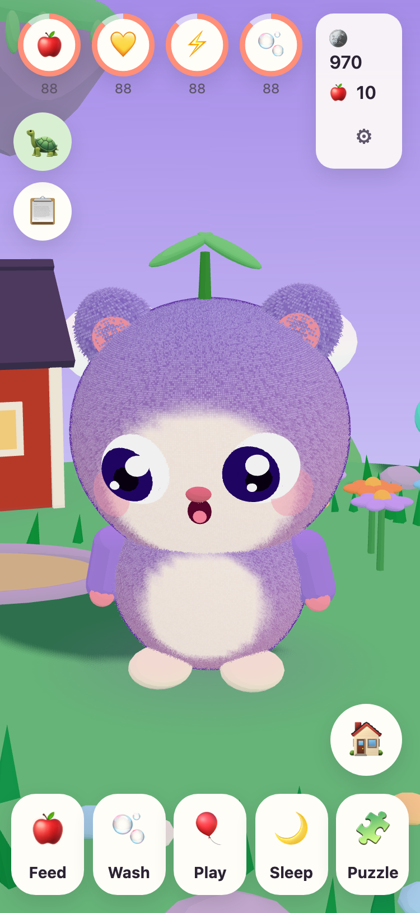
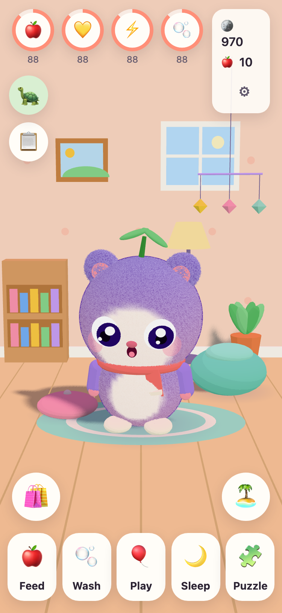
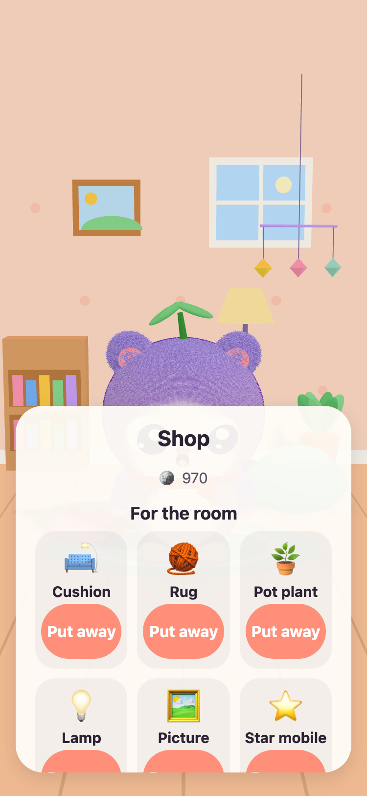
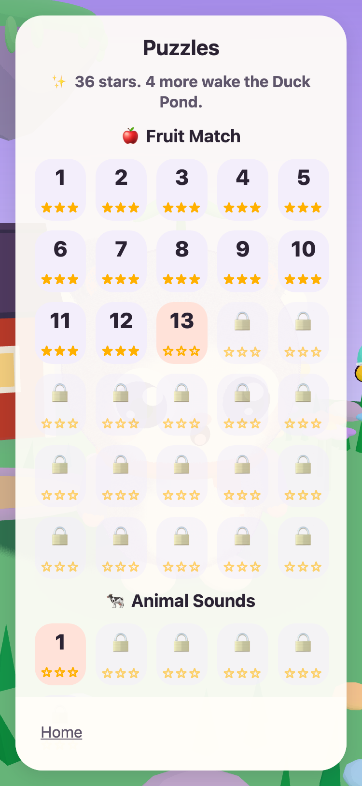

JUNOLittle Worlds
Hatch a Juno, look after it, and solve gentle puzzles that wake up a floating island. A calm game for children aged 6 to 10, on iPhone and iPad.
Coming to the App Store on 14 December 2026



A little friend of their own
GrandPa Tintin, the old turtle who looks after Meadow Island, has found three warm eggs. Your child picks one and names what hatches. From then on the Juno is theirs to feed, wash, play with and put down for a nap.
It grows from a baby to a junior to a grown-up as their friendship grows. Every puzzle star brings a little glow back to the island, until the whole island is awake.
Feed, wash, play, nap
Different foods and toys, bubbles in the bath, and a Juno that shows how it feels. Needs go down slowly and never to zero, so a Juno is never lost.
57 gentle puzzles
Fruit Match, Memory Garden, and Animal and Vehicle Sounds with real recordings. Stars come from moves, never from time, and trying again is always free.
An island that wakes up
The Flower Garden opens with bees, the Duck Pond fills with water and ducks, and seeds grow into apples and strawberries in the garden plots.
A room to make cosy
Coins from puzzles and daily quests buy decorations for the Juno's room and outfits to wear. Nothing in the coin shop costs real money.
Read aloud
Every line is read aloud for children who cannot read yet. Tap GrandPa Tintin to hear it again. In English and Swedish.
A Parent Area
Behind a parental gate: language, reading aloud, sounds, bedtime and a gentle break reminder. At bedtime the Juno sleeps, and the puzzles wait until morning.
Made by a grandfather
JUNO was made in Sweden by a grandfather for his granddaughter: a game he would be happy to see her play. GrandPa Tintin, the turtle in the game, is him.
So the rules are simple. Nothing that pressures, nothing that tricks, and nothing that collects anything about your child.
Free, with no ads
JUNO is free to download and has no ads, no tracking and no account. Everything your child does stays on your device. See the privacy page.
A grown-up can buy JUNO Plus or the Winter Pack in the Parent Area, behind the parental gate. Both are one-off purchases you can restore and share with your family.